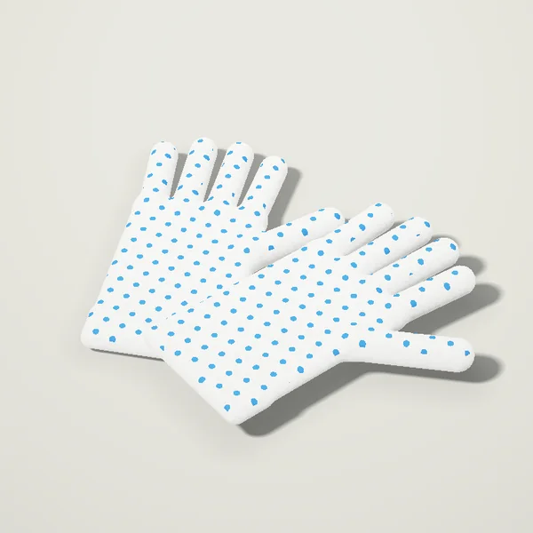
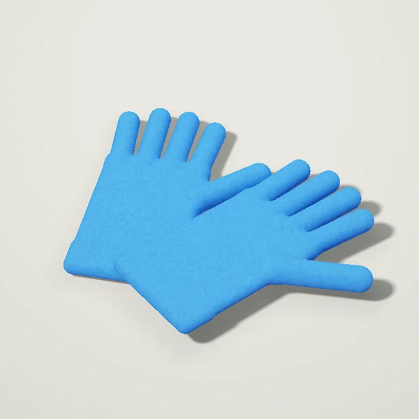
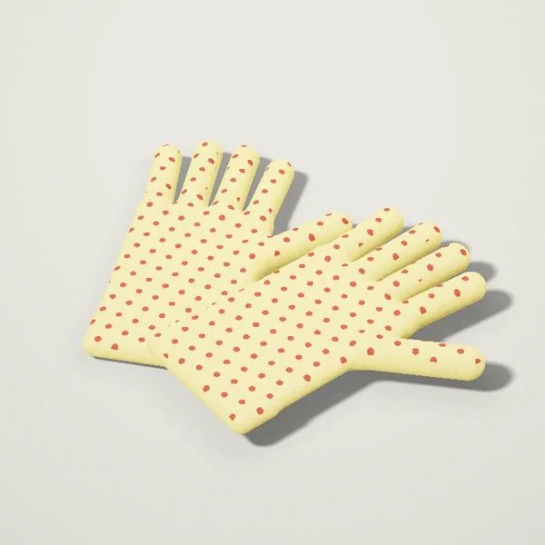
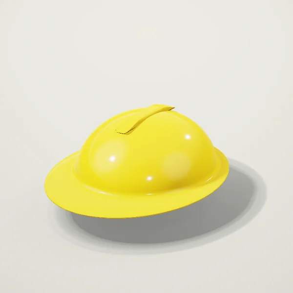
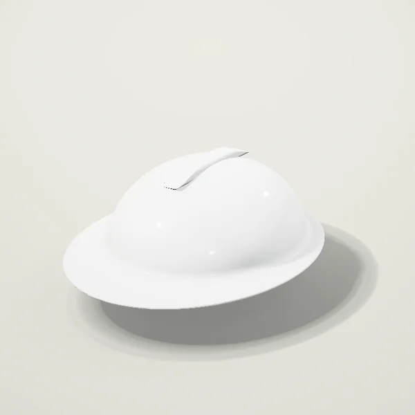
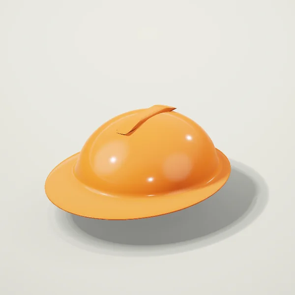
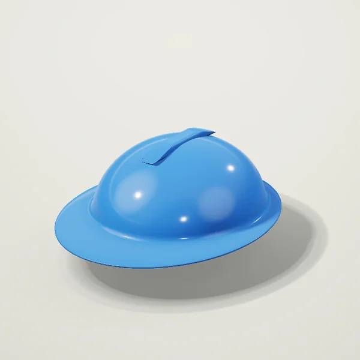
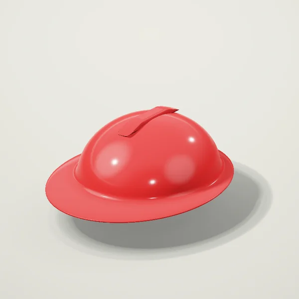

Iş kiyimi va himoya Toşkentda
Qölqoplar

PVX nuqtali paxta qölqop, 10 juft31 500 so‘mdan
Nitril qölqoplar, 10 juft57 500 so‘mdan
Issiq qölqoplar, 5 juft70 500 so‘mdan
Kaska va közoynaklar

Quriliş kaskasi45 000 so‘mdan
Quriliş kaskasi, oq45 000 so‘mdan
Quriliş kaskasi, töq sariq45 000 so‘mdan
Quriliş kaskasi, kök45 000 so‘mdan
Quriliş kaskasi, qizil45 000 so‘mdan